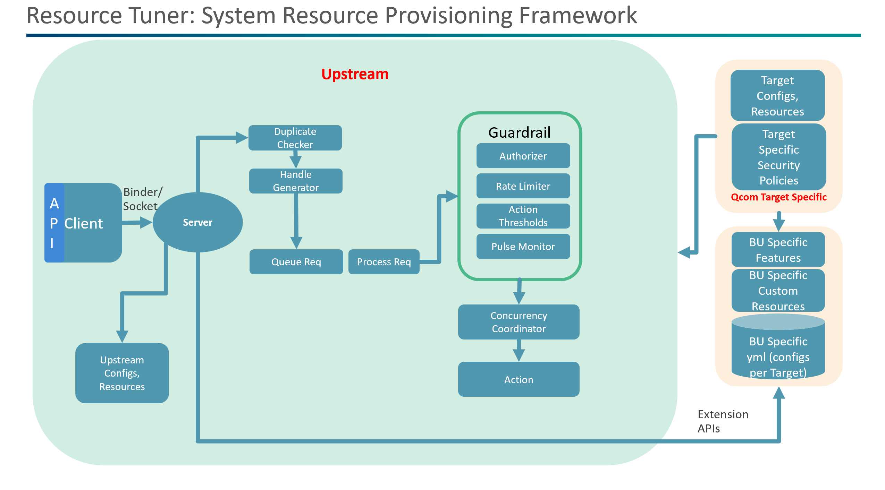

- Generated on Wed Jan 21 2026 06:05:23 for Userspace Resource Manager by
 1.9.8
1.9.8
|
Userspace Resource Manager
|
Userspace Resource Manager is a lightweight framework which provides below
Gaining control over system resources such as the CPU, caches, and GPU is a powerful capability in any developer’s toolkit. By fine-tuning these components, developers can optimize the system’s operating point to make more efficient use of hardware resources and significantly enhance the user experience while saving power.
For example, increasing the CPU's dynamic clock and voltage scaling (DCVS) minimum frequency to 1 GHz can boost performance during demanding tasks. Conversely, capping the maximum frequency at 1.5 GHz can help conserve power during less intensive operations.
Resource Tuner supports Signals which is dynamic provisioning of system resources in response to specific signals —such as app launches or app installations —based on configurations defined in YAML. It allows other software modules or applications to register extensions and add custom functionality tailored to their specific needs.
To get started with the project: Build and install
Refer the Examples Tab for guidance on resource-tuner API usage.
Userspace resource manager offers flexibility to select modules through the build system at compile time to make it suitable for devices which have stringent memory requirements. While Tests and Cli are debug and develoment modules which can be removed in the final product config. However resource tuner core module is mandatory.
Alter options in corresponding build file like below (ex. cmake options)
Userspace resource manager (uRM) contains
The Contextual Classifier is an optional module designed to identify the static context of workloads (e.g., whether an application is a game, multimedia app, or browser) based on an offline-trained model.
Key functionalities include:
ApplyActions to send tuning requests and RemoveActions to untune for process events.fasttext_model_supervised.bin, classifier-blocklist.txt, and ignore-tokens.txt.Flow of Events:
This section defines logical layer to improve code and config portability across different targets and systems. Please avoid changing these configs.
Logical IDs for clusters. Configs of cluster map can be found in InitConfigs->ClusterMap section
| LgcId | Name |
|---|---|
| 0 | "little" |
| 1 | "big" |
| 2 | "prime" |
Logical IDs for cgroups. Configs of cgroups map in InitConfigs->CgroupsInfo section
| Lgc Cgrp No | Cgrp Name |
|---|---|
| 0 | "root" |
| 1 | "init.scope" |
| 2 | "system.slice" |
| 3 | "user.slice" |
| 4 | "focused.slice" |
Logical IDs for MPAM groups. Configs of mpam grp map in InitConfigs->MpamGroupsInfo section
| LgcId | Mpam grp Name |
|---|---|
| 0 | "default" |
| 1 | "video" |
| 2 | "camera" |
| 3 | "games" |
Resource Types/Categories
| Resource Type | type |
|---|---|
| Lpm | 0 |
| Caches | 1 |
| Sched | 3 |
| Dcvs | 4 |
| Gpu | 5 |
| Npu | 6 |
| Memory | 7 |
| Mpam | 8 |
| Cgroup | 9 |
| Storage/Io | a |
Resource Code is composed of 2 least significant bytes contains resource ID and next significant byte contains resource type i.e. 0xrr tt iiii (i: resource id, t: resoruce type, r: reserved)
| Resource Name | Id |
|---|---|
| RES_TUNER_CPU_DMA_LATENCY | 0x 00 01 0000 |
| RES_TUNER_PM_QOS_LATENCY | 0x 00 01 0001 |
| RES_TUNER_SCHED_UTIL_CLAMP_MIN | 0x 00 03 0000 |
| RES_TUNER_SCHED_UTIL_CLAMP_MAX | 0x 00 03 0001 |
| RES_TUNER_SCHED_ENERGY_AWARE | 0x 00 03 0002 |
| RES_TUNER_SCALING_MIN_FREQ | 0x 00 04 0000 |
| RES_TUNER_SCALING_MAX_FREQ | 0x 00 04 0001 |
| RES_TUNER_RATE_LIMIT_US | 0x 00 04 0002 |
| RES_TUNER_CGROUP_MOVE_PID | 0x 00 09 0000 |
| RES_TUNER_CGROUP_MOVE_TID | 0x 00 09 0001 |
| RES_TUNER_CGROUP_RUN_ON_CORES | 0x 00 09 0002 |
| RES_TUNER_CGROUP_RUN_ON_CORES_EXCLUSIVELY | 0x 00 09 0003 |
| RES_TUNER_CGROUP_FREEZE | 0x 00 09 0004 |
| RES_TUNER_CGROUP_LIMIT_CPU_TIME | 0x 00 09 0005 |
| RES_TUNER_CGROUP_RUN_WHEN_CPU_IDLE | 0x 00 09 0006 |
| RES_TUNER_CGROUP_UCLAMP_MIN | 0x 00 09 0007 |
| RES_TUNER_CGROUP_UCLAMP_MAX | 0x 00 09 0008 |
| RES_TUNER_CGROUP_RELATIVE_CPU_WEIGHT | 0x 00 09 0009 |
| RES_TUNER_CGROUP_HIGH_MEMORY | 0x 00 09 000a |
| RES_TUNER_CGROUP_MAX_MEMORY | 0x 00 09 000b |
| RES_TUNER_CGROUP_LOW_MEMORY | 0x 00 09 000c |
| RES_TUNER_CGROUP_MIN_MEMORY | 0x 00 09 000d |
| RES_TUNER_CGROUP_SWAP_MAX_MEMORY | 0x 00 09 000e |
| RES_TUNER_CGROUP_IO_WEIGHT | 0x 00 09 000f |
| RES_TUNER_CGROUP_CPU_LATENCY | 0x 00 09 0011 |
These are defined in resource config file, but should not be changed. Resources can be added.
Signals
| Signal | Id |
|---|---|
| URM_APP_OPEN | 0x 00000001 |
| URM_APP_CLOSE | 0x 00000002 |
This API suite allows you to manage system resource provisioning through tuning requests. You can issue, modify, or withdraw resource tuning requests with specified durations and priorities.
Description: Issues a resource provisioning (or tuning) request for a finite or infinite duration.
API Signature:
Parameters:
duration (int64_t): Duration in milliseconds for which the Resource(s) should be Provisioned. Use -1 for an infinite duration.properties (int32_t): Properties of the Request.
numRes (int32_t): Number of resources to be tuned as part of the Request.resourceList (SysResource*): List of Resources to be provisioned as part of the Request.Returns: int64_t
retune or untune operations)-1 otherwise.Description: Modifies the duration of an existing tune request.
API Signature:
Parameters:
handle (int64_t): Handle of the original request, returned by the call to tuneResources.duration (int64_t): New duration in milliseconds. Use -1 for an infinite duration.Returns: int8_t
0 if the request was successfully submitted.-1 otherwise.Description: Withdraws a previously issued resource provisioning (or tune) request.
API Signature:
Parameters:
handle (int64_t): Handle of the original request, returned by the call to tuneResources.Returns: int8_t
0 if the request was successfully submitted.-1 otherwise.Description: Tune the signal with the given ID.
API Signature:
Parameters:
signalCode (uint32_t): A uniqued 32-bit (unsigned) identifier for the Signalduration (int64_t): Duration (in milliseconds) to tune the Signal for. A value of -1 denotes infinite duration.properties (int32_t): Properties of the Request.
appName (const char*): Name of the Application that is issuing the Requestscenario (const char*): Use-Case ScenarionumArgs (int32_t): Number of Additional Arguments to be passed as part of the Requestlist (uint32_t*): List of Additional Arguments to be passed as part of the RequestReturns: int64_t
-1: If the Request could not be sent to the server.Description: Release (or free) the signal with the given handle.
API Signature:
Parameters:
handle (int64_t): Request Handle, returned by the tuneSignal API call.Returns: int8_t
0: If the Request was successfully sent to the server.-1: OtherwiseDescription: Tune the signal with the given ID.
API Signature:
Parameters:
signalCode (uint32_t): A uniqued 32-bit (unsigned) identifier for the Signalduration (int64_t): Duration (in milliseconds)properties (int32_t): Properties of the Request.appName (const char*): Name of the Application that is issuing the Requestscenario (const char*): Name of the Scenario that is issuing the RequestnumArgs (int32_t): Number of Additional Arguments to be passed as part of the RequestnumArgs (uint32_t*): List of Additional Arguments to be passed as part of the RequestReturns: int8_t
0: If the Request was successfully sent to the server.-1: OtherwiseDescription: Gets a property from the config file, this is used as property config file used for enabling or disabling internal features in uRM, can also be used by modules or clients to enable/disable features in their software based on property configs in uRM.
API Signature:
Parameters:
prop (const char*): Name of the Property to be fetched.buffer (char*): Pointer to a buffer to hold the result, i.e. the property value corresponding to the specified name.buffer_size (size_t): Size of the buffer.def_value (const char*): Value to be written to the buffer in case a property with the specified Name is not found in the Config StoreReturns: int8_t
0 If the Property was found in the store, and successfully fetched-1 otherwise.Resource-tuner utilises YAML files for configuration. This includes the resources, signal config files. Target can provide their own config files, which are specific to their use-case through the extension interface
Initialisation configs are mentioned in InitConfig.yaml file. This config enables resource-tuner to setup the required settings at the time of initialisation before any request processing happens.
Common initialization configs are defined in /etc/urm/common/InitConfig.yaml
Targets can override initialization configs (in addition to common init configs, i.e. overrides specific configs) by simply pushing its own InitConfig.yaml into /etc/urm/custom/InitConfig.yaml
RESTUNE_REGISTER_CONFIG(INIT_CONFIG, "/bin/InitConfigCustom.yaml");
Configs of cluster map in InitConfigs->ClusterMap section
| LgcId | Name |
|---|---|
| 0 | "little" |
| 1 | "big" |
| 2 | "prime" |
Configs of cgroups map in InitConfigs->CgroupsInfo section
| Lgc Cgrp No | Cgrp Name |
|---|---|
| 0 | "default" |
| 1 | "bg-app" |
| 2 | "top-app" |
| 3 | "camera-app" |
Configs of mpam grp map in InitConfigs->MpamGroupsInfo section
| Num Cache Blocks | Cache Type | Prio Aware |
|---|---|---|
| 2 | "L2" | 0 |
| 1 | "L3" | 1 |
| LgcId | Mpam grp Name | prio |
|---|---|---|
| 0 | "default" | 0 |
| 1 | "video" | 1 |
| 2 | "camera" | 2 |
| Field | Type | Description | Default Value |
|---|---|---|---|
ID | int32_t (Mandatory) | A 32-bit unique identifier for the CGroup | Not Applicable |
Create | boolean (Optional) | Boolean flag indicating if the CGroup needs to be created by the resource-tuner server | False |
IsThreaded | boolean (Optional) | Boolean flag indicating if the CGroup is threaded | False |
Name | string (Optional) | Descriptive name for the CGroup | Empty String |
| Field | Type | Description | Default Value |
|---|---|---|---|
ID | int32_t (Mandatory) | A 32-bit unique identifier for the Mpam Group | Not Applicable |
Priority | int32_t (Optional) | Mpam Group Priority | 0 |
Name | string (Optional) | Descriptive name for the Mpam Group | Empty String |
| Field | Type | Description | Default Value |
|---|---|---|---|
Type | string (Mandatory) | Type of cache (L2 or L3) for which config is intended | Not Applicable |
NumCacheBlocks | int32_t (Mandatory) | Number of Cache blocks for the above mentioned type, to be managed by resource-tuner | Not Applicable |
PriorityAware | boolean (Optional) | Boolean flag indicating if the Cache Type supports different Priority Levels. | false |
Tunable resources are specified via ResourcesConfig.yaml file.
Common resource configs are defined in /etc/urm/common/ResourcesConfig.yaml.
Targets can override resource cofigs (can fully override or selective resources) by simply pushing its own ResourcesConfig.yaml into /etc/urm/custom/ResourcesConfig.yaml
RESTUNE_REGISTER_CONFIG(RESOURCE_CONFIG, "/bin/targetResourceConfigCustom.yaml");
Each resource is defined with the following fields:
| Field | Type | Description | Default Value |
|---|---|---|---|
ResID | Integer (Mandatory) | unsigned 16-bit Resource Identifier, unique within the Resource Type. | Not Applicable |
ResType | Integer (Mandatory) | unsigned 8-bit integer, indicating the Type of the Resource, for example: cpu / dcvs | Not Applicable |
Name | string (Optional) | Descriptive name | Empty String |
Path | string (Optional) | Full resource path of sysfs or procfs file path (if applicable). | Empty String |
Supported | boolean (Optional) | Indicates if the Resource is Eligible for Provisioning. | False |
HighThreshold | integer (int32_t) (Mandatory) | Upper threshold value for the resource. | Not Applicable |
LowThreshold | integer (int32_t) (Mandatory) | Lower threshold value for the resource. | Not Applicable |
Permissions | string (Optional) | Type of client allowed to Provision this Resource (system or third_party). | third_party |
Modes | array (Optional) | Display modes applicable ("display_on", "display_off", "doze"). | 0 (i.e. not supported in any Mode) |
Policy | string(Optional) | Concurrency policy ("higher_is_better", "lower_is_better", "instant_apply", "lazy_apply"). | lazy_apply |
Unit | string(Optional) | Translation Unit ("MB", "GB", "KHz", "Hz" etc). | NA (multiplier = 1) |
ApplyType | string (Optional) | Indicates if the resource can have different values, across different cores, clusters or cgroups. | global |
TargetsEnabled | array (Optional) | List of Targets on which this Resource should be available for tuning | Empty List |
TargetsDisabled | array (Optional) | List of Targets on which this Resource should not be available for tuning | Empty List |
PropertiesConfig.yaml file stores various properties which are used by resource-tuner modules internally. For example, to allocate sufficient amount of memory for different types, or to determine the Pulse Monitor duration. Client can also use this as a property store to store their properties which gives it flexibility to control properties depending on the target.
Common resource configs are defined in /etc/urm/common/PropertiesConfig.yaml.
Targets can override Properties cofigs (can fully override or selective resources) by simply pushing its own PropertiesConfig.yaml into /etc/urm/custom/PropertiesConfig.yaml
RESTUNE_REGISTER_CONFIG(PROPERTIES_CONFIG, "/bin/targetPropertiesConfigCustom.yaml"); if Client have no specific extensions like custom resources or features only want to change the config then the above method (using the same file name and pushing it to custom folder) is the best method to go for.
| Field | Type | Description | Default Value |
|---|---|---|---|
Name | string (Mandatory) | Unique name of the property | Not Applicable |
Value | integer (Mandatory) | The value for the property. | Not Applicable |
The file SignalsConfig.yaml defines the signal configs.
| Field | Type | Description | Default Value |
|---|---|---|---|
SigId | Integer (Mandatory) | 16 bit unsigned Signal Identifier, unique within the signal category | Not Applicable |
Category | Integer (Mandatory) | 8 bit unsigned integer, indicating the Category of the Signal, for example: Generic, App Lifecycle. | Not Applicable |
Name | string (Optional) | Empty String | |
Enable | boolean (Optional) | Indicates if the Signal is Eligible for Provisioning. | False |
TargetsEnabled | array (Optional) | List of Targets on which this Signal can be Tuned | Empty List |
TargetsDisabled | array (Optional) | List of Targets on which this Signal cannot be Tuned | Empty List |
Permissions | array (Optional) | List of acceptable Client Level Permissions for tuning this Signal | third_party |
Timeout | integer (Optional) | Default Signal Tuning Duration to be used in case the Client specifies a value of 0 for duration in the tuneSignal API call. | 1 (ms) |
Resources | array (Mandatory) | List of Resources. | Not Applicable |
The file TargetConfig.yaml defines the target configs, note this is an optional config, i.e. this file need not necessarily be provided. uRM can dynamically fetch system info, like target name, logical to physical core / cluster mapping, number of cores etc. Use this file, if you want to provide this information explicitly. If the TargetConfig.yaml is provided, resource-tuner will always overide default dynamically generated target information and use it. Also note, there are no field-level default values available if the TargetConfig.yaml is provided. Hence if you wish to provide this file, then you'll need to provide all the complete required information.
| Field | Type | Description | Default Value |
|---|---|---|---|
TargetName | string | Target Identifier | Not Applicable |
ClusterInfo | array | Cluster ID to Type Mapping | Not Applicable |
ClusterSpread | array | Cluster ID to Per Cluster Core Count Mapping | Not Applicable |
The file ExtFeaturesConfig.yaml defines the Extension Features, note this is an optional config, i.e. this file need not necessarily be provided. Use this file to specify your own custom features. Each feature is associated with it's own library and an associated list of signals. Whenever a relaySignal API request is received for any of these signals, resource-tuner will forward the request to the corresponding library. The library is required to implement the following 3 functions:
| Field | Type | Description | Default Value |
|---|---|---|---|
FeatId | Integer | unsigned 32-bit Unique Feature Identifier | Not Applicable |
LibPath | string | Path to the associated library | Not Applicable |
Signals | array | List of signals to subscribe the feature to | Not Applicable |
As part of the tuneResources APIs, the resources (which need to be provisioned) are specified by using a List of Resource structures. The format of the Resource structure is as follows:
mResCode: An unsigned 32-bit unique identifier for the resource. It encodes essential information that is useful in abstracting away the system specific details.
mResInfo: Encodes operation-specific information such as the Logical cluster and Logical core ID, and MPAM part ID.
mOptionalInfo: Additional optional metadata, useful for custom or extended resource configurations.
mNumValues: Number of values associated with the resource. If multiple values are needed, this must be set accordingly.
Value / Values: It is a single value when the resource requires a single value or a pointer to an array of values for multi-value configurations.
As mentioned above, the resource code is an unsigned 32 bit integer. This section describes how this code can be constructed. Resource-tuner implements a System Independent Layer(SIL) which provides a transparent and consistent way for indexing resources. This makes it easy for the clients to identify the resource they want to provision, without needing to worry about portability issues across targets or about the order in which the resources are defined in the YAML files.
Essentially, the resource code (unsigned 32 bit) is composed of two fields:
These fields can uniquely identify a resource across targets, hence making the code operating on these resources interchangable. In essence, we ensure that the resource with code "x", refers to the same tunable resource across different targets.
Examples:
| Name | ResType | Examples |
|---|---|---|
| LPM | 1 | /dev/cpu_dma_latency, /sys/devices/system/cpu/cpu<>/power/pm_qos_resume_latency_us |
| CACHES | 2 | |
| CPU_SCHED | 3 | /proc/sys/kernel/sched_util_clamp_min, /proc/sys/kernel/sched_util_clamp_max |
| CPU_DCVS | 4 | /sys/devices/system/cpu/cpufreq/policy<>/scaling_min_freq, /sys/devices/system/cpu/cpufreq/policy<>/scaling_max_freq |
| GPU | 5 | |
| NPU | 6 | |
| MEMORY | 7 | |
| MPAM | 8 | |
| Cgroup | 9 | /sys/fs/cgroup/s/cgroup.procs, /sys/fs/cgroup/s/cgroup.threads, /sys/fs/cgroup/s/cpuset.cpus, /sys/fs/cgroup/s/cpuset.cpus.partition, /sys/fs/cgroup/s/cgroup.freeze, /sys/fs/cgroup/s/cpu.max, /sys/fs/cgroup/s/cpu.idle, /sys/fs/cgroup/s/cpu.uclamp.min, /sys/fs/cgroup/s/cpu.uclamp.max, /sys/fs/cgroup/s/cpu.weight, /sys/fs/cgroup/s/memory.max, /sys/fs/cgroup/s/memory.min, /sys/fs/cgroup/s/cpu.weight.nice |
| STORAGE | a |
Note the following code snippets showcase the use of resource-tuner APIs. For more in-depth examples refer "link to examples dir"
This example demonstrates the use of tuneResources API for resource provisioning.
The memory allocated for the resourceList will be freed by the tuneResources API. The user of this API should not free this memory.
The below example demonstrates the use of the retuneResources API for modifying a request's duration.
The below example demonstrates the use of the untuneResources API for untuning a previously issued tune Request.
The Resource-tuner framework allows target chipsets to extend its functionality and customize it to their use-case. Extension interface essentially provides a series of hooks to the targets or other modules to add their own custom behaviour. This is achieved through a lightweight extension interface. This happens in the initialisation phase before the service is ready for requests.
Specifically the extension interface provides the following capabilities:
Registers a custom resource Applier handler with the system. This allows the framework to invoke a user-defined callback when a tune request for a specific resource opcode is encountered. A function pointer to the callback is to be registered. Now, instead of the default resource handler (provided by resource-tuner), this callback function will be called when a Resource Provisioning Request for this particular resource opcode arrives.
Registers a custom resource teardown handler with the system. This allows the framework to invoke a user-defined callback when an untune request for a specific resource opcode is encountered. A function pointer to the callback is to be registered. Now, instead of the normal resource handler (provided by resource-tuner), this callback function will be called when a Resource Deprovisioning Request for this particular resource opcode arrives.
Registers a custom configuration YAML file. This enables target chipset to provide their own config files, i.e. allowing them to provide their own custom resources for example.
The above line of code, will indicate to resource-tuner to read the resource configs from the file "/etc/bin/targetResourceConfigCustom.yaml" instead of the default file. note, the target chipset must honour the structure of the YAML files, for them to be read and registered successfully.
Custom signal config file can be specified similarly:

Resource-tuner architecture is captured above.
Here is a more detailed explanation of the key features discussed above:
Certain resources can be tuned only by system clients and some which have no such restrictions and can be tuned even by third party clients. The client permissions are dynamically determined, the first time it makes a request. If a client with third party permissions tries to tune a resource, which allows only clients with system permissions to tune it, then the request shall be dropped.
To ensure efficient and predictable handling of concurrent requests, each system resource is governed by one of four predefined policies. Selecting the appropriate policy helps maintain system stability, optimize performance/power, and align resource behavior with application requirements.
As part of the tuneResources API call, client is allowed to specify a desired priority level for the request. Resource-tuner supports 2 priority levels:
However when multiplexed with client-level permissions, effetive request level priorities would be
Requests with a higher priority will always be prioritized, over another request with a lower priority. Note, the request priorities are related to the client permissions. A client with system permission is allowed to acquire any priority level it wants, however a client with third party permissions can only acquire either third party high (TPH) or third party low (TPL) level of priorities. If a client with third party permissions tries to acquire a System High or System Low level of priority, then the request will not be honoured.
To improve efficiency and conserve memory, it is essential to regularly check for dead clients and free up any system resources associated with them. This includes, untuning all (if any) ongoing tune request issued by this client and freeing up the memory used to store client specific data (Example: client's list of requests (handles), health, permissions, threads associated with the client etc). resource-tuner ensures that such clients are detected and cleaned up within 90 seconds of the client terminated.
Resource-tuner performs these actions by making use of two components:
Pulse Monitor runs on a seperate thread peroidically.
Resource-tuner has rate limiter module that prevents abuse of the system by limiting the number of requests a client can make within a given time frame. This helps to prevent clients from overwhelming the system with requests and ensures that the system remains responsive and efficient. Rate limiter works on a reward/punishment methodology. Whenever a client requests the system for the first time, it is assigned a "Health" of 100. A punishment is handed over if a client makes subsequent new requests in a very short time interval (called delta, say 2 ms). A Reward results in increasing the health of a client (not above 100), while a punishment involves decreasing the health of the client. If at any point this value of Health reaches zero then any further requests from this client wil be dropped. Value of delta, punishment and rewards are target-configurable.
Resource-tuner's RequestManager component is responsible for detecting any duplicate requests issued by a client, and dropping them. This is done by checking against a list of all the requests issued by a clientto identify a duplicate. If it is, then the request is dropped. If it is not, then the request is added and processed. Duplicate checking helps to improve system efficiency, by saving wasteful CPU time on processing duplicates.
Logical to physical core/cluster mapping helps to achieve application code portability across different chipsets on client side. Client can specify logical values for core and cluster. Resource-tuner will translate these values to their physical counterparts and apply the request accordingly. Logical to physical mapping helps to create system independent layer and helps to make the same client code interchangable across different targets.
Logical mapping entries can be found in InitConfig.yaml and can be modified if required.
Logical layer values always arranged from lower to higher cluster capacities. If no names assigned to entries in the dynamic mapping table then cluster'number' will be the name of the cluster for ex. LgcId 4 named as "cluster4"
below table present in InitConfigs->ClusterMap section
| LgcId | Name |
|---|---|
| 0 | "little" |
| 1 | "big" |
| 2 | "prime" |
resource-tuner reads machine topology and prepares logical to physical table dynamically in the init phase, similar to below one
| LgcId | PhyId |
|---|---|
| 0 | 0 |
| 1 | 1 |
| 2 | 3 |
| 3 | 2 |
The system's operational modes are influenced by the state of the device's display. To conserve power, certain system resources are optimized only when the display is active. However, for critical components that require consistent performance—such as during background processing or time-sensitive tasks, resource tuning can still be applied even when the display is off, including during low-power states like doze mode. This ensures that essential operations maintain responsiveness without compromising overall energy efficiency.
In case of server crash, resource-tuner ensures that all the resource sysfs nodes are restored to a sane state, i.e. they are reset to their original values. This is done by maintaining a backup of all the resource's original values, before any modification was made on behalf of the clients by resource tuner. In the event of server crash, reset to their original values in the backup.
The Users are free to pick and choose the resource-tuner modules they want for their use-case and which fit their constraints. The Framework Module is the core/central module, however if the users choose they can add on top of it other Modules: signals and profiles.
Resource Tuner provides a MemoryPool component, which allows for pre-allocation of memory for certain commonly used type at the time of server initialization. This is done to improve the efficiency of the system, by reducing the number of memory allocations and deallocations that are required during the processing of requests. The allocated memory is managed as a series of blocks which can be recycled without any system call overhead. This reduces the overhead of memory allocation and deallocation, and improves the performance of the system.
Further, a ThreadPool component is provided to pre-allocate processing capacity. This is done to improve the efficiency of the system, by reducing the number of thread creation and destruction required during the processing of Requests, further ThreadPool allows for the threads to be repeatedly reused for processing different tasks.
Resource-tuner provides a minimal CLI to interact with the server. This is provided to help with development and debugging purposes.
Where:
duration: Duration in milliseconds for the tune requestpriority: Priority level for the tune request (HIGH: 0 or LOW: 1)num: Number of resourcesres: List of resource ResCode, ResInfo (optional) and Values to be tuned as part of this requestExample:
Where:
handle: Handle of the previously issued tune request, which needs to be untunedExample:
Where:
handle: Handle of the previously issued tune request, which needs to be retunedduration: The new duration in milliseconds for the tune requestExample:
Where:
key: The Prop name of which the corresponding value needs to be fetchedExample:
Where:
key: The Prop name of which the corresponding value needs to be fetchedExample:
For questions, suggestions, or contributions, feel free to reach out:
This project is licensed under the BSD 3-Clause Clear License.